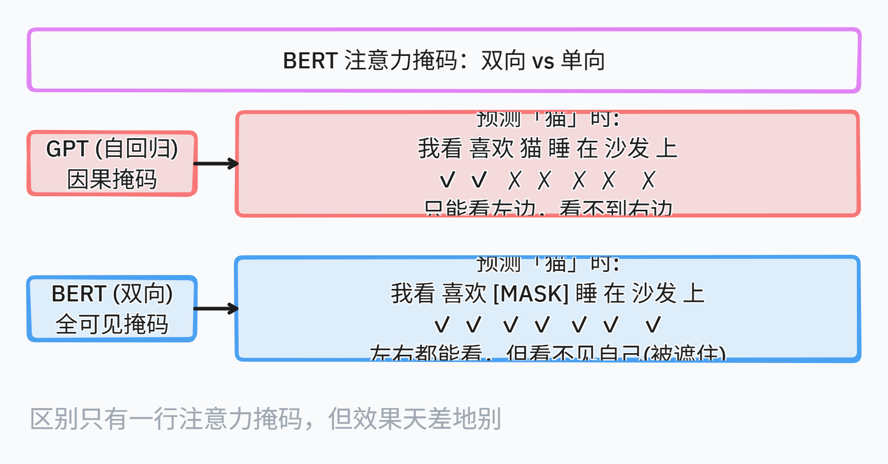

引子：从 GPT-1 的"单向"说起
上一篇拆了 Transformer，它的核心是注意力——理论上能看上下文所有词。但 2018 年 OpenAI 的 GPT-1，把 Transformer Decoder 单独拎出来做自回归语言模型：每一步只看自己和过去的词。
这就像读句子时只准往前看，不准回头。读"小明给小红 ___ 一本书"时，GPT 只能根据"小明给小红"猜下一个词，看不到"书"这个宾语。
这种"单向"约束让 GPT 擅长生成，但遇到理解任务（分类、问答、NER）就吃亏了——很多判断需要"两头看"。
2018 年底 Google 的 BERT 就是来解决这个问题的——名字里的 Bidirectional 就是这个意思。
双向的本质：Attention Mask 的区别

图 1：GPT 因果掩码 vs BERT 双向掩码——同一句话的注意力范围
GPT 和 BERT 都用 Transformer，唯一的架构区别就在 attention mask：
GPT（Causal Mask）：
|
|
BERT（Bidirectional Mask）：
|
|
BERT 没有 causal mask——所有 token 互相可见。但问题来了：如果模型预测"猫"时能看到"猫"本身，那它直接抄答案就行，学不到任何东西。所以 BERT 用了一个巧妙的 trick：把 15% 的 token 遮住，让模型去猜被遮的是什么。
这就是 MLM 的核心思想，也是 BERT 训练双向表示的关键设计。
MLM 的技术细节
15% 的遮蔽策略
BERT 论文选择了 15% 的遮蔽率，这个数字不是随便定的。实验发现：
- 遮蔽太少（<10%）：模型没有足够的训练信号
- 遮蔽太多（>20%）：训练数据被破坏得太厉害，模型学不到正常的语言规律
15% 是一个平衡点。但论文还发现了一个问题：预训练时有 [MASK]，微调时没有，这造成了 mismatch。为了解决这个问题，被选中的 15% token 被进一步拆分成三种处理方式：
|
|
最后 10% 保持原样的设计非常巧妙：它让模型知道"即使输入是正确的，我也要输出正确的结果"，这大大减轻了 pre-train-finetune 的 mismatch。
损失函数
BERT 的损失函数只在被遮住的 15% token 上计算：
|
|
也就是说，模型在训练时只学习预测被遮住的词，其他位置没有梯度。这比自回归语言模型（每个位置都算损失）更高效——模型只需要关注最难的任务。
为什么 MLM 比自回归更高效？
自回归语言模型（GPT）的损失函数是：
|
|
这意味着模型要学两次"我喜欢"和"猫"之间的共现关系，也要学"猫"和"睡"之间的关系。但很多相邻关系是 trivial 的（“我”→“喜欢"这种高频搭配不需要太多训练信号）。
MLM 只让模型预测最难的那 15% 位置，其他 85% 的位置虽然参与计算注意力，但不产生梯度。这使得每次 forward pass 的 15% 计算量就产生了有意义的训练信号——更高效。
NSP 的深层设计
NSP（Next Sentence Prediction）是 BERT 的第二个预训练任务。
为什么需要 NSP？ MLM 只学词和词的关系，但很多下游任务需要句间关系（问答、推理、对话）。BERT 需要一种方式让模型学会"句子级别的理解”。
怎么做？
- 输入：[CLS] 我 喜欢 猫 [SEP] 它 很 可爱 [SEP]
- 50% 概率：B 是 A 的真实下一句（IsNext）
- 50% 概率：B 是随机抽的句子（NotNext）
- 用 [CLS] 的输出做二分类
NSP 的贡献有多大？ 论文实验显示，去掉 NSP 后 BERT 在 NLI 任务上掉了约 1-2 个点。但后来的 RoBERTa 发现，如果训练数据足够大、训练时间足够长，NSP 的效果可以被其他目标替代。
关键思想： NSP 证明了预训练任务可以不止一个。MLM 学 token 级表示，NSP 学句子级表示，两者互补。这个思想后来被很多模型沿用（如 ALBERT 的 SOP、ELECTRA 的判别式任务）。
输入表示：Token + Segment + Position
BERT 的输入由三个 embedding 相加构成：

图 1：BERT 输入表示——Token + Segment + Position 三种 embedding 相加
Token Embeddings：用 WordPiece 分词，词表大小 30,000。WordPiece 的核心思想是：把常见词（如"the"、“cat”）保留为完整词，把不常见词拆成子词（如"playing" → “play” + “##ing”）。这比 BPE 更注重语言的形态学特征。
Segment Embeddings：只有两个向量 E_A 和 E_B，分别标记输入属于句子 A 还是 B。这个设计很轻量——两个 embedding 就能区分句子的边界。
Position Embeddings：和 Transformer 原版不同，BERT 用的是可学习的位置编码，而不是正弦函数。这意味着每个位置都有一个独立的向量，模型可以自己学习位置间的关系。可学习的代价是：最大长度被限制在 512（BERT 预设的最大序列长度），超过这个长度的输入无法处理。
架构与训练细节
| 参数 | BERT-base | BERT-large |
|---|---|---|
| 层数 | 12 | 24 |
| 隐藏维度 | 768 | 1024 |
| 注意力头 | 12 | 16 |
| 参数量 | ~110M | ~340M |
| 训练数据 | BookCorpus (800M) + English Wikipedia (2,500M) | 同左 |
训练细节（这些细节往往被忽略，但对理解 BERT 很重要）：
- 优化器：Adam，学习率 1e-4，使用 warmup（前 10,000 步线性增长到 1e-4，然后线性衰减）
- Batch size：256 个序列，每个序列最大 512 个 token
- 训练步数：1,000,000 步（约 40 epoch）
- 硬件：4 块 Cloud TPU（base）/ 16 块 Cloud TPU（large），训练约 4 天
- 正则化：Dropout 0.1，GELU 激活函数（不是 ReLU）
GELU 的选择：BERT 是第一个广泛使用 GELU 的模型。GELU 比 ReLU 更平滑，在负半轴有非零梯度，这对深层网络的训练更友好。这个选择后来被几乎所有 Transformer 模型沿用。
下游任务：微调的艺术
BERT 的微调极其简单——加一个分类头，端到端训练。这也是它成功的关键之一。
分类任务
|
|
[CLS] 是 BERT 的一个特殊设计：它不参与任何语义计算，只用来聚合整个序列的表示。在预训练时，[CLS] 的输出用于 NSP 分类；在微调时，[CLS] 的输出用于下游分类任务。
问答任务（SQuAD）
|
|
注意这里没有额外参数——BERT 直接输出每个 token 对应起始和结束的概率。这意味着模型必须理解"答案的边界在哪里"，这是阅读理解的核心能力。
微调的技术细节
微调时，BERT 通常使用 2e-5 到 5e-5 的学习率（比预训练低 1-2 个数量级），用小 batch（16-32），训练 2-4 个 epoch。为什么这么少？ 因为预训练已经学到了通用语言表示，微调只需要小幅调整到特定任务。
这个"预训练 → 微调"范式的影响非常深远：它让 NLP 任务从"每个任务训练一个专用模型"变成了"一个通用模型 + 任务特定的头部"。这和后来的 GPT 系列是相反的思路——GPT 选择不做微调，靠 in-context learning 适配任务。
BERT 的十一项 SOTA 结果
BERT 论文在 11 个 NLP 任务上刷新了 SOTA 记录，这是当时最全面的 benchmark 结果之一：
| 任务 | 类型 | 改进幅度 |
|---|---|---|
| SQuAD v1.1 (问答) | 阅读理解 | +5.7 F1 |
| SQuAD v2.0 (问答) | 阅读理解 | +7.6 F1 |
| GLUE 基准 | 多任务综合 | +7.7% |
| MNLI (自然语言推理) | 句间关系 | +5.1% |
| NER (命名实体识别) | 序列标注 | +3.2 F1 |
| SWAG (常识推理) | 推理 | +8.3% |
这些提升意味着什么？ 在 BERT 之前，每个 NLP 任务都需要精心设计的特征工程和任务特定架构。BERT 提供了一种通用解决方案——同样的架构、同样的预训练权重，只需要换一个分类头就能在几乎所有任务上超越之前的最好结果。
这对 NLP 研究的影响是革命性的：研究方向从"设计更好的任务特定架构"转向了"设计更好的预训练目标"。
BERT 的局限与启示
局限：
- 最大输入长度 512（可学习位置编码的限制）
- 预训练和微调的 mismatch 仍然存在（虽然用 10% 原样缓解了）
- 计算量大（base 模型 110M 参数，large 340M，在当时已经很大）
- 生成任务不擅长（这是 Encoder-only 架构的天生限制）
启示：
- 遮蔽策略是双向预训练的关键——不是简单的"去掉 causal mask"，而是设计了巧妙的 15% 遮蔽策略来解决"看见自己"的问题。
- 多任务预训练是可行的——MLM + NSP 证明了一个模型可以同时学不同粒度的语言知识。
- 规模不是唯一因素——BERT-base 只有 110M 参数，但合理的预训练目标设计让它超越了很多更大的模型。
- 微调范式的力量——BERT 证明了"通用预训练 + 轻量微调"可以替代"任务特定架构"，这个范式至今仍是 NLP 的主流方法之一。
参考资料
- Devlin, J., Chang, M.W., Lee, K., & Toutanova, K. (2018). BERT: Pre-training of Deep Bidirectional Transformers for Language Understanding. arXiv:1810.04805.
- Liu, Y., et al. (2019). RoBERTa: A Robustly Optimized BERT Pretraining Approach. arXiv:1907.11692.
- Clark, K., et al. (2020). ELECTRA: Pre-training Text Encoders as Discriminators Rather Than Generators. arXiv:2003.10555.
- The Illustrated BERT（Jay Alammar 经典图解）：http://jalammar.github.io/illustrated-bert/